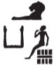

Column 3 (214-221)
Esna 214
- Location: Column 3
- Date: Domitian
-
Hieroglyphic Text
- Bibliography: None
Aʿnḫ nṯr nfr
snn n Rʿ
mw nṯry
prỉ m fnḏ=f
zȝ Ỉtm
bʿḥ ḥw.t-Mw.t
m ȝḫ.w
snḏ ḥr.w n mȝȝ=f
zȝ-Rʿ
(tmtyns ḫwỉ)|
mry ẖnmw-Rʿ nb tȝ-sn.t
A Live the good god,
likeness of Re,
divine seed,
who emerged from his nose,
son of Atum,
who floods the Temple of the Mother
with excellent things;
people are scared from seeing him.
The son of Re
(Domitian Augustus)|
beloved of Khnum-Re Lord of Esna.
Bʿnḫ nṯr nfr
ỉȝw.t n nsw.t-bỉty
ḥqȝ.n=k tȝ.wy
m mȝʿ-ḫrw
sḥḏ ḥr=k
mȝʿ-ḫrw=k
zmȝ.n=k tȝ.wy m ḥtp
nsw.t-bỉty
(ỉwtkrtr gysrs)|
mry ẖnmw-Rʿ nb sḫ.t
B Live the good god,
(you perform?)63 the office of the King,
having ruled the two lands
in justification.
May your face be bright,
may you be justified,
having united the two lands in peace.
King of Upper and Lower Egypt
(Autokrator Caesar)|
beloved of Khnum-Re Lord of the Field.
Esna 215
- Location: Column 3
- Date: Domitian
-
Hieroglyphic Text
- Bibliography: None
Cartouches of Heka the child, with figures of Khnum and Horus Behedety.
Heka’s name is spelled:
3; 7, 14;  11
Esna 216
- Location: Column 3
- Date: Domitian
-
Hieroglyphic Text
- Bibliography: Sauneron 1982, pp. 35-39. See also Tempeltexte 2.0
1ỉr(.t) p(ȝ) wdn n N.t
m hrw pn mỉ rʿ-nb
ḏd-mdw
1 Performing the litany of Neith
on this day like every day.
Words spoken:
wdn n N.t wr.t
mw.t-nṯr nb(.t) tȝ-sn.t
m rn(.w)=s nb(.w)
ḥr-tp ʿnḫ-wḏȝ-snb
n nsw.t-bỉty
(pr-ʿȝ ḏ.t)|
Offering for Neith the great,
Mother of God, Lady of Esna,
in all her names,
in addition to the life, prosperity, health
for the King of Upper and Lower Egypt,
(Pharaoh
n N.t wr.t
mw.t-nṯr nb(.t) tȝ-sn.t
For Neith the great,
Mother of God, Lady of Esna.
n N.t wr.t
mw.t-nṯr nb(.t) Zȝw
For Neith the great,
Mother of God, Lady of Sais.
n N.t m tȝ hȝy.t
m 2ḥw.t-N.t
For Neith in the kiosk
in the 2 Temple of Neith.
n N.t nb(.t) Zȝw
ḥqȝ.t ʿȝ.t n Bȝq.t
For Neith Lady of Sais,
great ruler of Egypt (Baqet).
n N.t
n.t ỉr(.t) tȝ
For Neith (N.t)
water (n.t) which made the earth (ỉr tȝ).
n N.t
Ỉrỉ-tȝ tȝ-ṯnn
For Neith
Irita (ỉr-tȝ) Tatenen.
n N.t
tȝ-ṯnn ỉr ỉr-tȝ
For Neith
Tatenen who made Irita.
n N.t
ṯȝy ỉr ḥm.t
For Neith
man who acts as a woman.
n N.t
ḥm.t ỉr(.t) ṯȝy
For Neith
woman who acts as a man.
3n N.t
n.t ỉr(.t) nḥḥ
3 For Neith
the n.t-water who makes nḥḥ-eternity.
n N.t
ḏ.t ỉr(.t) ḏ.t
For Neith
ḏ.t-water who makes ḏ.t-eternity.
n N.t
wbn(.t) m Nwn
ỉw tȝ m zmȝwy
For Neith
who arose from Nun,
while the earth was in darkness.
n N.t
qrḥ.t ʿnḫ.t
dỉ(.t) tp=s m Nwn
ḥnʿ Ỉrỉ-tȝ
wṯz Nw.t
For Neith,
the living ancestor serpent,
who showed herself in Nun
together with Irita,
who lifts up the sky (Nut).
n N.t
tmȝ.t ḥr.t-tp.t
ḫp(r.t) m ḥȝ.t
mw.t n ḏr-ʿ
4ms(.t) ms sy
For Neith
maternal uraeus serpent,
who came about in the beginning;
mother of the very beginning,
4 who bore the one who bore her.
n N.t
(ỉ)ʿrr.t ʿȝ.t
r-ʿ nḥḥ ḏ.t
mḥn.t nb(.t)
ḫtỉ(.tw) ḥr rn=s
For Neith
great uraeus,
for all eternity,
every uraeus goddess
is inscribed with her name.64
n N.t
mḥn.t m ḥȝ.t
ʿnḫ.t ḫwỉ(.t) tȝ pn
For Neith
uraeus coiled upon the brow,
living-serpent who protects this land.
n N.t Rȝ.t
For Neith-Rayet.
n N.t ỉtn.t
For Neith the solar disk.
n N.t psḏ.t
For Neith the shining one.
n N.t
5kȝ-psỉ
For Neith
5 blazing bull (the full moon).
n N.t
ỉr(.t) m šȝʿ
qmȝ(.t) ḥry.w ẖry.w
For Neith
who acted in the beginning,
who created what is above and below.
n N.t štȝ.t
ỉr(.t) wnn.t
qmȝ(.t) nty nb.w
m ḫp(r)=s
For Neith the mysterious,
who made what exists,
who created all that is,
as she came into being.
n N.t
ỉr(.t) p.t n bȝ=s
dỉ=s zȝ=s ỉm=s
m šww
For Neith
who made the sky for her Ba,
she places her son therein
as the sun.
n N.t
ỉr.t dwȝ.t
sštȝ(.t) sy
m ỉrw=s
ỉr(.t) […]=s
For Neith
who made the Duat
and rendered it remote,
in her form
of she who made her […]
25
6n N.t
ỉt mw.t
ḫp(r) ḫnt
pr m Nwn
nỉ ḫp(r) wnn.t
6 For Neith
father and mother,65
who came about before,
and emerged from Nun,
before what exists had come into being.
n N.t
ỉt ỉt.w
mw.t mw.wt
ḫp(r.t)
nỉ ḫpr ḫpr.w
For Neith
father of fathers,
mother of mothers,
who came into being,
before other beings came into being.
n N.t pȝwty.t
ỉr(.t) pȝwty.w
For Neith the Primeval,
who made the Primeval ones.
n N.t ỉh.t wr.t
ms(.t) Rʿ
ṯz(.t) pr.t
n nṯr.w rmṯ.w
For Neith Ihet-weret,
who gives birth to Re,
and binds the seed
of gods and humans.
7n N.t-Rʿ.t-tȝ.wy
m s.t=s nb
For Neith-Rattawy
in all her thrones.66
n N.t-Ỉmn.t
ʿȝ.t wr.t
ḥr.t-ỉb Ỉp.t-s.wt
For Neith-Amunet
the very great one
within Karnak.
n N.t-Mnḥy.t [wr.t]
[nb.t ḫnt]-tȝ
For Neith-Menhyt [the great]
[Lady of Khent]-ta.
n N.t-Sḫm.t-Wȝḏ.t
nb(.t) sḫm.t nb(.t)
For Neith-Sakhmet-Wadjyt
Lady of ever Sakhmet.
n N.t-Bȝst.t
bṯ(.t) bṯn.w=f
For Neith-Bastet,
who attacks his rebels.
n N.t-Mw.t
tmȝ.t [n.t] Rʿ
nb(.t) […]
8zȝ(.t) zȝ=s
For Neith-Mut,
mother [of] Re,
Lady [of ….]
8 who protects her son.
n N.t-Spd.t
ḥnw.t ḫȝbs.w
For Neith-Sothis,
Mistress of the decan stars.
n N.t-Nḫb.t
štȝ.t
nb(.t) tȝ-šmʿ
For Neith-Nekhbet,
the mysterious (vulture),
Lady of Upper Egypt.
n N.t-Wȝḏ.t
n.t mn.tw
m [tp=s?]
For Neith-Wadjyt,
the red crown is affixed
upon [her head?].
[n N].t-Ḥw.t-ḥr wr.t
nb(.t) tȝ.wy
[For Nei]th-Hathor the great,
Lady of the Two Lands.
n N.t
wʿ.t n nṯr.w nb(.w)
For Neith
sole-uraeus of all gods.
n N.t
[ʿȝ].t m tȝ [pn]
For Neith
[the grea]t in [this] land.
n N.t
nb(.t) tȝ […]
9sṯỉ(.t) šsr(.w)=s
r ḫfty.w nb
For Neith
Lady of [Esna?]
9 who shoots her arrows
against all enemies.
n N.t
nb.t ḥw.t-ỉt
nḏ.t zȝ=s Rʿ
m-ʿ ky.w=f
For Neith
Lady of Temple of the Father,
who guards her son, Re,
from his opponents.
n [N.t]
[…]
For Neith
[…]
[n N.t]
[…]
[ẖȝ]k(.w)-ỉb(.w)
[For Neith]
[…]
[the dis]affected ones.
n N.t
ḫfʿ(.t) pḏ.t
ȝm(.t) šsr
r [ḫs]f ỉỉ.w
For Neith
who seizes the bow,
and grasps the arrow,
to [rep]el invaders.
n N.t
[…] 10ḥw.t-bỉty
hnw n=s
bȝ.w P bȝ.w Nḫn
For Neith
[…] 10 the ḥw.t-bỉty,
for whom the Bas of Pe and Nekhen
perform the hnw-dance.
n N.t
qmȝ(.t) Ỉtm
pḏ.t 9.t ḫb(.w)
n bȝw[=s]
For Neith
who created Atum,
the Nine Bows bow down
to [her] power.
[n N.t]
[…]
ỉr(.t) Rʿ
[For Neith]
[… the cow]
who made Re.
n N.t
wr.t wsr.t
[nn] ḥr-ḫw=s
[…]
For Neith
great and mighty,
[all] by herself,
[…]
11n N.t
mw.t n(.t) wʿ
nn snw=f
11 For Neith,
mother of the sole god,
without his second.
n N.t
twȝ(.t) zȝ=s Rʿ
ỉmỉ.tw wp.t=s
ḏȝỉ(.t) Nwn ẖr=f
m Mḥ.t-wr.t
sḥr=s sbỉ ḥr=f
ḥr mw
For Neith,
who raises her son, Re,
between her horns,
and sails across Nun with him
as Mehet-weret.
She repels his rebels
upon the water.
n N.t
ỉr(.t) zȝw ḥȝ Rʿ
snḏm ỉb n Rʿ […]
ỉmỉ.tw wp.t=s
For Neith
who makes protection around Re,
and who pleases Re’s heart […]
between her horns.
n N.t
12n.t sḫp(r.t) wnn.t
For Neith,
12n.t-water who creates what exists.
n N.t
sṯ.t Ḥʿpỉ r nw=f
For Neith
who pours out Hapi at his time.
n N.t
srnp(.t) wḥm-ʿnḫ
r tr=f
For Neith
who renews the wḥm-ʿnḫ-flood,
at his season.
n N.t
ṯz(.t) Wsỉr wrḏ-ỉb
m […] ʿnḫ
nḏ(.t) n [zȝ=f] Ḥr
For Neith
who binds Osiris, weary-of heart,
with […] of life;
guardian of [his son] Horus.
n N.t
[…]
For Neith
[…]
13n N.t
dỉ(.t) mrḥ.t n nṯr.w
13 For Neith
who gives ointment to the gods.
n N.t
dỉ(.t) mnḫ.t n nṯr.w
For Neith
who gives linen to the gods.
n N.t
wr wr.w
pȝwt(.t) pȝwty.w
For Neith
greatest of the great,
most primeval of the primeval.
n N.t
ḥr(.t) s.t=s wr.t
ỉr=s s.t=s
m tȝ-sn.t m tȝ-šmʿ
For Neith
upon her great throne,
she makes her throne
in Esna in Upper Egypt.
[n N.]t
nb(.t) tȝ[-sn.t]
14zȝ(.t) ṯȝ.wy n zȝ=s
m ỉȝ.t-ṯȝ.wy
[For Nei]th
Lady of E[sna]
14 who guards the chicks of her son,
in Mound of the Chicks.
n N.t
nb(.t) ḥw.t-mw.t
rr.t sbk.wy=s
For Neith
Lady of Temple of the Mother,
who nurses her two crocodiles.
n N.t-Rs.t-ḥw.wt=s
ḥpt(.t) ḫḫ-n-N.t
m ʿ.wy=s
For Neith-Rs.t-ḥw.wt=s
who embraces a crocodile
in her arms.
n N.t-Rs.t-ḥw.wt[(=s)
nḏ.t nṯr.w […]
[…]=sn
For Neith-Rs.t-ḥw.wt(=s)
who protects the gods […]
their […].
n N.t
15mwnf n nsw.t-bỉty
nḏ.t mšʿ
zȝ(.t) tȝ r-ȝw=f
For Neith
15 guardian of the king,
avenger of the army,
who protects the entire land.
n N.t
wr wr.w
ḫnt(.t) ḥw.t-ỉt
For Neith
greatest of the great
foremost of Temple of the Father.
n N.t-Mnḥy.t
nb(.t) ḫnt-tȝ
sʿnḫ(.t) zȝ=s Šw
For Neith-Menhyt,
Lady of Khent-ta,
who keeps her son, Shu, alive.
n N.t-Nb.t-ww
nbỉ.t ḥnw.wt nb.wt
For Neith-Nebtu,
nbỉ.t-cow, mistress of cows.
n N.t
nb.t Pr-ẖnmw
mnḥ.t ʿȝ.t 16nfr.t
ḫpn ỉrṯ.t
For Neith
Lady of Per-Khnum,
great, beautiful 16mnḥ.t-cow,
plump with milk.
n N.t
nb.t Pr-nṯr
šd.t ẖnmw-Šw zȝ-Rʿ
m ỉ(ȝ)k=f
For Neith
Lady of Per-netjer,
who nurtures Khnum-Shu, son of Re,
in his old age.
n N.t
nb.t ʿbȝ
ỉr(.t) ḏȝỉs.w
nw Mḥ.t-wr.t
For Neith
Lady of Aba,
who made the Daisu
of Mehet-weret.
n N.t
nb.t ʿnḫ.t
sʿnḫ(.t) ḥtpty.w
For Neith
Lady of the West (ʿnḫ.t),
who enlivens (sʿnḫ) the blessed dead.
n N.t-Ỉs.t
ḥr.-tỉb ḥw.t-bȝ.w
ỉr(.t) qbḥw
n nb-nḥḥ
For Neith-Isis
within Temple of the Bas,
who performs cool water offerings
for the Lord of Eternity (Osiris).
17n N.t
nb(.t) mḥ-N.t
ḥr(.t)-ỉb sḫ.t štȝ.t
mḥy.t n ỉȝ.t-ṯȝ.wy
17 For Neith
Lady of the Mḥ-N.t chapel,
within the mysterious field
north of Mound of the Chicks.
n N.t nb.t N.t
wh(.t) sšr=s
m ḫfty=s
For Neith Lady of the Neith nome,
her arrow pierces
through her enemy.
n N.t nb(.t) Rs-N.t
For Neith Lady of Rs-N.t.
n N.t nb(.t) Mḥ-N.t
For Neith Lady of Mḥ-N.t.
n N.t
ḏfḏ [n …]
For Neith
iris [of …]
n N.t
mḥn.t(?) Rʿ
For Neith
uraeus of Re.
n N.t
For Neith
n N.t
18mw.t n Rʿ
qmȝ(.t) Ỉtm
ỉr(.t) nṯr.w
sḫp(r.t) rmṯ.w
For Neith
18 Mother of Re,
who created Atum,
who made the gods,
and produced humans.
n N.t
m rn(.w)=s nb.w
For Neith
in all her names.
n N.t
m ḫprw=s nb(.w)
For Neith
in all her manifestations.
n N.t
m sštȝ.w=s nb(.w)
For Neith
in all her mysterious forms.
n N.t
m s.(w)t=s nb(.w)
For Neith
in all her seats.
n N.t
m bw nb mr kȝ=s ỉm
dỉ=sn ʿnḫ-ḏd-wȝs nb
n zȝ-Rʿ
(tmdyns ḫwỉ)|
For Neith
in every place her Ka loves to be.
May the give all ʿnḫ-ḏd-wȝs
to the Son of Re,
(Domitian Augustus)|
Esna 217
- Location: Column 3
- Date: Domitian
-
Hieroglyphic Text
- Bibliography: Sauneron 1982, pp. 40-41, 76-78; Leitz 2008; Leitz 2021a.
19pȝ wdn n Wsỉr
m hrw pn
mỉ rʿ nb
ḏd-mdw
wdn n Wsỉr (wn-nfr mȝʿ-ḫrw)|
nsw.t nṯr.w
m rn=f nb
ḥr-tp ʿnḫ-wḏȝ-snb
n nsw.t-bỉty
(tmtyns ḫwỉ)|
18 The litany of Osiris
on this day,
just like every day.
Words spoken:
Litany for Osiris (Wennefer justified)|
King of the Gods,
in all his names,
as well as life, dominion, and health
for the King of Upper and Lower Egypt
(Domitian Augustus)|
n Wsỉr (wn-nfr mȝʿ-ḫrw)|
nsw.t nṯr.w
nṯr ʿȝ ḥry-ỉb tȝ-sn.t
For Osiris (Wennefer justified)|
King of the Gods,
great god within Esna.
n Skr-Wsỉr
ḥry-ỉb tȝ-sn.t
For Sokar-Osiris,
within Esna.
n Wsỉr-20-Skr
ḥry-ỉb šty.t
For Osiris-20-Sokar
within the Shetayet-shrine.
n Wsỉr
Ỉwn wr m Ỉwny.t
For Osiris,
great Iun in Iunyt.
n Wsỉr
wn(.w) n=f wȝ.t
n rw.ty
For Osiris,
for whom the path is opened
of the Ruty (Shu and Tefnut).
n Wsỉr nb ḫnt-tȝ
m ỉȝ.t-ṯȝ.wy
For Osiris, Lord of Khent-ta
in District of the Chicks.
n Wsỉr nb ʿbȝ
nṯr ʿȝ ḫnt Pr-nṯr
For Osiris, Lord of Aba,
great god within Per-netjer.
n Wsỉr 21nb Pr-ẖnmw
ẖnm ḫnty sḫ.t=f
For Osiris 21 Lord of Per-Khnum,
who unites with Foremost of his Field (Khnum).67
n Wsỉr
bs štȝ m ḥw.t-ṯȝ.wy
For Osiris,
mysterious image in Temple of the Chicks.
n Wsỉr
ʿq=f Pt-nṯr tp sw 10
For Osiris
he enters Per-netjer every 10 days.
n Wsỉr nb sḫ.t
ḫnty ww
For Osiris, Lord of the Field,
foremost of the agricultural district.
n Wsỉr ỉw m ḥʿpỉ
ỉwḥ ȝḫ.t
For Osiris who comes as Hapi
and floods the land.
22n Wsỉr
ẖnm sn.t=f Ỉs.t
22 For Osiris
who joins his sister, Isis.
n Wsỉr srwḏ tȝ
m rḏw=f
For Osiris who makes the earth grow
with his efflux.
n Wsỉr wtṯ bȝ
ḥry-ỉb ʿ.t-bȝ
For Osiris, who begat the Ba,
within the Chamber of the Ba.68
n Wsỉr ḥry-ỉb ḥw.t-bȝ.w
For Osiris within Temple of the Bas.
n Wsỉr nb ʿnḫ
ḫnty nb-ʿnḫ
For Osiris, Lord of Life,
Foremost of Neb-ankh.
n Wsỉr
nb 23dwȝ.t štȝ.t
ḫnty tȝ-ḏsr
For Osiris
Lord 23 of the mysterious Duat,
foremost of the Sacred Land.
n Wsỉr
nb ỉmḥ.t
ḫnty Mȝnw
For Osiris,
Lord of the grotto,
foremost of Manu.
n Wsỉr nb s.t-ḥr.t
ḫnty ḥw.t-Ỉtm
For Osiris, Lord of the Upper Place, foremost of the Temple of Atum.69
n Wsỉr nb ḥw.t-ḏfȝw
ḫnty sḫ.t
For Osiris, Lord of Hut-Djefau,
foremost of the Field.
n Wsỉr
nb š nṯry
ḫnty zȝw-ẖnn
For Osiris,
Lord of the sacred lake,
foremost of zȝw-ẖnn.70
n Wsỉr
nb š 24dšr
ḫnty ỉȝ.t-kȝkȝ
For Osiris,
Lord of the red 24 lake,
foremost of the Mound of the kȝkȝ-plant.71
n Wsỉr ḥry-ỉb ḥw.t-bȝ.w
For Osiris within Temple of the Bas.
n Wsỉr nb pr-sȝḥw-Rʿ
For Osiris Lord of Per-Sahure.
n Wsỉr
nb rs-nt
ḫnty mḥ-nt
For Osiris,
Lord of the Rs-nt,
foremost of Mḥ-nt.
n Wsỉr (wn-nfr mȝʿ-ḫrw)|
nsw.t nṯr.w
nṯr ʿȝ ḥqȝ ḏ.t
For Osiris (Wennefer justified)|
King of the Gods,
Great god, Ruler of eternity.
n Wsỉr ḫnty-Ỉmnty.w
nṯr ʿȝ nb ȝbḏw
For Osiri-Khentiamentiu,
Great god, Lord of Abydos.
n Wsỉr
nb 25ṯȝ-wr
ḫnty tȝ-ḏsr
For Osiris,
Lord of 25 the Thinite nome,
foremost of the Sacred Land.
n Wsỉr nb Ḏdw
ḫnty ʿnḏty
For Osiris Lord of Busiris,
foremost of the Busirite nome.
n Wsỉr nb zȝw
ḫnty ḥw.t-bỉty
For Osiris Lord of Sais,
foremost of the ḥw.t-bỉty.
n Wsỉr m ḥw.t-sr
sr m Ỉwnw
For Osiris in the ḥw.t-sr,
Prince in Heliopolis.
n Wsỉr
spȝ šps m 26Ỉwnw
For Osiris
august Sepa in 26 Heliopolis.
n Wsỉr-ḥmȝg
ḫnty ḥw.t-Skr
For Osiris-Hemag,
foremost of the Temple of Sokar.
n Wsỉr
Ptḥ šps m ỉnb-ḥḏ
For Osiris,
august Ptah in Memphis.
n Wsỉr
ḏd šps m ḥw.t-kȝ-Ptḥ
For Osiris,
august djed-pillar in Memphis.
n Wsỉr
nsw.t m p.t
ḥqȝ m tȝ
ỉty ʿȝ m dwȝ.t
For Osiris,
king in heaven,
ruler on earth,
great sovereign in the Duat.
n Wsỉr
nsw šmʿ
27bỉty mḥw
ḥqȝ ʿȝ m tȝ (r)-ḏr=f
For Osiris,
nsw-King of Upper Egypt,
bỉty-King of Lower Egypt,
great ruler of the entire earth.
n Wsỉr ḥry-ỉb Ỉp.t-s.wt
For Osiris within Karnak.
n Wsỉr
sr wr m Wȝs.t
For Osiris,
great prince in Thebes.
n Wsỉr
ḫy šps m Ỉp.t-wr.t
For Osiris,
august child in the Great Opet Temple.
n Wsỉr
nsw.t ḥry nṯr.w
For Osiris,
King, chief of the gods.
n Wsỉr
nb-ḏr nṯr.w
For Osiris,
All-Lord of the gods.
n Wsỉr
ỉwʿʿ n Šw
smsw n Gbb
For Osiris,
heir of Shu,
eldest of Geb.
n Wsỉr ḥwnw nfr
pr m Nw.t
For Osiris, good youth,
who came forth from Nut.
n Wsỉr
ḫʿỉ m ḥḏ.t
nb wrr.t
For Osiris,
who appears in the white crown,
lord of the double crown.
n Wsỉr nb ỉʿrr.wt
sṯỉ ḥr.w
m nbỉ.t=f
For Osiris, lord of uraei,
who illumines faces
with his fiery light.
n Wsỉr
pr m ẖ.t
r nb
mȝȝ m-sȝ=f
r pȝ wḫȝ n mḥy.t
For Osiris,
who emerged from the womb
in order to be lord.
(After this, look
to the column to the north).
The litany continues in Esna 208.
Esna 218
- Location: Column 3
- Date: Probably Domitian
-
Hieroglyphic Text
- Bibliography: See Tempeltexte 2.0
- Parallels: Multiple phrases from this offering scene, including the rare spelling of ‘Atum’, occur in the Hapi procession from the facade of the pronaos: Esna II, 54.
Formula
1[…] sḫ.t m ḥr=t
ỉḫt=s r ḫft-ḥr=t
(?) nty […]
1 […] the field before you,
its products in front of you
(?) which […]
The King
2[nṯr nfr]
[…] n ḫnty-wȝr=f
mzỉ rwḏ m sḫ.t
ȝpd.w […]
2 [The good god] […replica] of Khenty-waref, who brings what grows in the field, birds […]
Menhyt
3ḏd-mdw n Mnḥyt-Nb.t-ww
[…]
[…] 4sḫ.t
sḫp(r.t) ỉḫt nb.w
m kȝ.w […]
[npry] 5n tpy.w-tȝ
nb(.t) šȝ[.w…]
6nb(.t) rȝ.w ʿšȝ ḥb.w
7dỉ=ỉ n=k sḫ.t […]
ỉmy.w[=s] nb.w
3 Words spoken by Menhyt-Nebtu
[…]
4 […] the field,
who creates all things,
consisting of food […]
[grain] 5 for those upon earth;
Lady of the marshes […]
6 Lady of geese, numerous of fowl.
Behind the Divinities
12nsw.t-bỉty
sḫ.t nb sḫ.t
ȝḫ.t nb ȝḫ.t
Rnn.t nfr.t
[nb.t] nfrw
šms(.t) ỉb=s m ww
zb(.t)-sš m […]
[…] sḫ.t nfr.t
Mnḥy.t-Nb.t-ww nb sḫ.t
12 King of Upper and Lower Egypt,
Sekhet, lord of the sḫ.t-field,
Akhet, lord of the ȝḫ.t-field,
Good Renenutet,
[Lady] of goodness;
she who folows her heart in the prairie,
who ‘roams the marshes’ in […]
[…] the good field:
Menhyt-Nebtu, Lady of the Field.
Esna 219
- Location: Column 3
- Date: Probably Domitian
-
Hieroglyphic Text
- Bibliography: el-Sayed 1982, II, pp. 631-632, Doc. 1002; see also Tempeltexte 2.0
Title
1ỉr(.t) wdn n mw.t=f
sḥb pr=s
m ḫnmw nḏm
1 Performing the litany for his mother,
making her temple festive
with sweet-smelling scent.
The King
2nṯr nfr
snn n Rʿ
šzp-ʿnḫ n zȝ N.t
rwḏ ʿ.wy
ẖr […]
[kȝ]p ḫm nṯr.w
m ẖms šmʿ
pr m […]
sḥb ỉwnn
2 The good god,
likeness of Re,
living image of the Son of Neith,
firm of hands
bearing […]
who [cen]ses the shrine of the gods
with Upper Egyptian aromatics,
which comes from […]
(to) make the dwelling festive.
Re-Harakhty
4ḏd-mdw n Rʿ-Ḥr-ȝḫty
ḥry nṯr.w
nṯr-ʿȝ ḥr-ỉb tȝ-sn.t
zȝ N.t
ms.n 5Mḥ.t-wr.t
ḫprỉ m ḏ.t=f
ỉtm m ẖ.t=f
6sḥḏ wr
sḥḏ tȝ.wy m […]
7dỉ=ỉ ʿšȝ ḏȝm.w[=k…]
4 Words spoken by Re-Harakhty,
chief of the gods,
great god within Esna;
son of Neith,
born of 5 Mehet-weret;
Khepri in the morning,
Atum in the evening;
6 the Great Light,
who illumines the two lands with […]
7 I let [your] generations be numerous […]
Behind the Divinities
8nsw.t-bỉty
ḫp(r.t) m ḥȝ.t
ṯnỉ sw
r nṯr.w nṯry.t
m nty […]r
ḫpr(.t) m Nwn
Mḥ.t-wr.t […]
[nḥ]m zȝ=s m-ʿ ky.w=f
N.t […] zȝ.w-[n=sn]
8 King of Upper and Lower Egypt,
who came about in the beginning,
who distinguished herself
above gods and goddesses,
as that which […]
and came about from Nun;
Mehet-weret […]
[who res]cues her son from his enemies:
Neith […] of the guardian deities.
Esna 220
- Location: Column 3
- Date: Probably Domitian
-
Hieroglyphic Text
- Bibliography: None
Anṯr nfr
wr pḥty
nsw.t qn
nḫỉ Bȝq.t
nb-tȝ.wy
(ȝwtwk(r)twr gysrs)|
ʿnḫ(.w) ḏ.t […]
A The good god,
great of strength,
mighty ruler
who protects Egypt.
Lord of the Two Lands
(Autokrator Caesar)|
living eternally […]
BMnḥy.t wr.t
nb.t ḫnt-tȝ
mḥn.t ḫpr(.t) m ḥȝ.t
mḥn=s ḥr tp
n nṯr nb
nn nṯr mḥn=f sw
ḥr tp=s
Rʿy.t sḥḏ(.t) tȝ.wy
[…]
B Menhyt the Great,
Lady of Khent-ta,
uraeus who came about in the beginning,
she coils upon the head
of every god;
there is no god who might coil himself
upon her head.
Female Re who illumines the two lands
[…]
C[…]
ḥwỉ ḫȝs.wt
ṯnỉ sw […]
[…]
who strikes the foreigners,
[…] distinguished him […]
D[…]
mw.t-nṯr n
[…]
D […]
divine mother of […]
[…]
Esna 221
- Location: Column 3
- Date: Domitian
-
Hieroglyphic Text
- Bibliography: None
Minor inscriptions. Cartouches of Domitian.